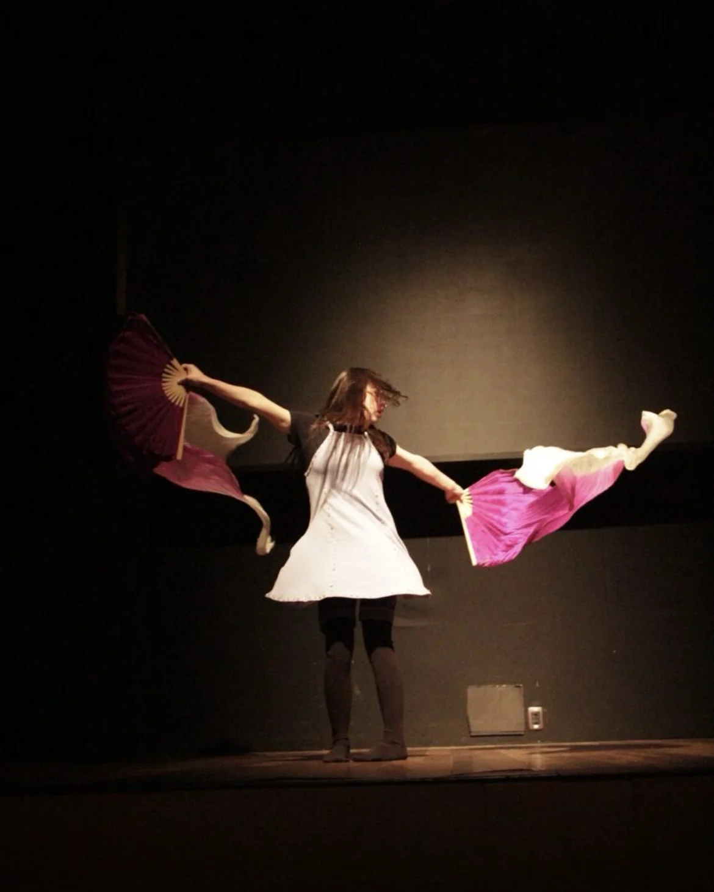

Oficina de dança

A presença da dança e do canto, com a música, mantêm em comum o fato de que a entrada em cena delas não é preparada por qualquer tipo de ensino formal relativo a expressão. Tal concepção visa privilegiar a sintonia que cada um estabelece com o ritmo, a harmonia e a melodia. Assim, a dança e o canto na companhia da música, permite estabelecer um circuito elementar de ligação, de conexão. Consideremos que tal conexão não se limita a vocalização dos sons na cadência do tempo, assim como no tempo dos movimentos da dança . O que se visa na ligação da musica com o canto e a dança, é um tipo de presença em que o sujeito, a partir de suas limitações, consiga reativar a ligação com uma musicalidade que precede as palavras na sua constituição, tanto quanto com um movimento que, na espécie falante, é efeito de sua incoordenação estrutural, a partir da qual a unidade ilusória de seu eu, como imagem propria, se produz. Considere-se, tambem, que a suposição de poder ativar o circuito do canto com a música, implica admitir que o ser falante quando vem ao mundo, é primeiramente acolhido pela sonata materna, ou seja, ele é encantado pela voz da mãe. Assim, o infans poderá se encantar pela palavra e a fala, e se fazer ver e escutar de uma forma diferenciada.